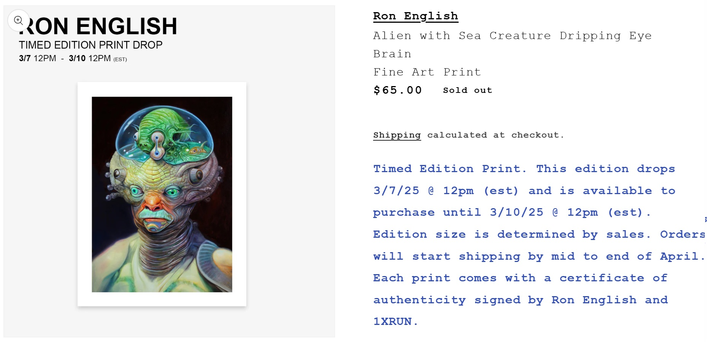

Notes
This composition was later adapted by the artist as a timed-edition fine art print released through 1XRUN on March 7, 2025. The print measured 12 × 16 inches, was produced as an archival pigment print on 290gsm Moab Entrada Fine Art Paper, and the final edition totaled 23 impressions. Each print was signed and numbered by the artist and came with a certificate of authenticity from 1XRUN; see the related print on 1XRUN.
Ancillary Documentation
